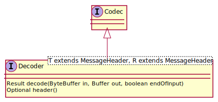
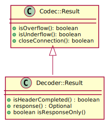
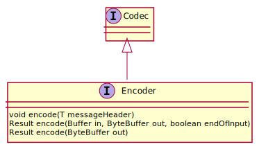
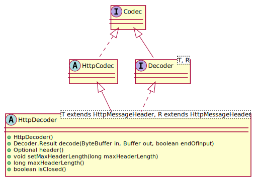
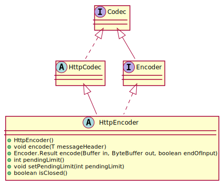
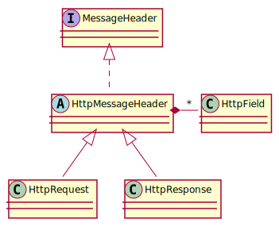
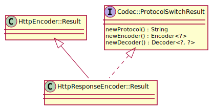

JDrupes HTTP Codecs 2.2.0
The HTTP codecs are modeled after the Java
CharsetDecoder and
CharsetEncoder.
An HTTP decoder is an engine that transforms a sequence
of bytes into a sequence of HTTP requests or responses (and streams
their body data). An HTTP encoder transforms an HTTP request or
response (including streamed body data) into a sequence of bytes.
The main difference between the Charset codecs and the HTTP codecs API
is due to the type of the decoded data. For Charset codecs this is a
homogeneous stream of chars, which is easy to handle. For HTTP codecs,
it’s a mixture of headers and body data which can again consist
of either bytes or chars.
Decoders
Decoders realize the Decoder interface.

Binary data received from the network stream is passed to the
Decoder.decode(java.nio.ByteBuffer, java.nio.Buffer, boolean) method in
a ByteBuffer. The method consumes as much data
as possible from the buffer and returns the result of the decoding
process.

<img align="right"src=“org/jdrupes/httpcodec/handle-decode-result.svg”/>
The basic information provided by the decoding process (defined in
Codec.Result) is
known from the Charset codecs. “Underflow” indicates that more input
data is needed in order to complete the decoding of the message.
“Overflow” indicates that the output buffer is full. “Close connection”
is mostly set by encoders and indicates that the connection
should be closed. This is explained in more detail in the next section.
Besides streams with body data, decoders such as an HTTP decoder
provide the headers that precede this (payload) data. The successful decoding
of a header is indicated in the result by
Decoder.Result.isHeaderCompleted(). The
decoded header can be retrieved with
Decoder.header(). Of course, if the
receive buffer is rather small and the header rather big, it may
take several decoder invocations before a header becomes available.
Sometimes, a protocol requires a provisional feedback to be sent after
receiving the message header. Because the decoder cannot send this
feedback itself, it provides the message to be sent in such cases
with Decoder.Result.response().
If a received message violates the protocol or represents
some kind of “ping” message, sending back the prepared response message
may be all that has to be done. These cases are indicated by
Decoder.Result.isResponseOnly()).
Encoders
Encoders realize the Encoder interface.

Encoding is started with a call to
Encoder.encode(MessageHeader). Subsequent
calls to
Encoder.encode(Buffer, ByteBuffer, boolean)
fill the output buffer with the encoded header and the body data.
If the information in the header indicates that the message does not
have a body, Encoder.encode(ByteBuffer)
can be called.
The result of the encode method is a Codec.Result that indicates
whether the output buffer is full and/or further body data is required.
In addition, Codec.Result.closeConnection
may indicate that the connection, to which the message is sent, should
be closed after sending the message. This indication
is needed because closing the connection is sometimes required by protocols
to complete a message exchange. As an encoder cannot close the connection
itself, this must be done by the invoker (the manager of the connection).
Why Generics?
While the previous sections explain the interfaces and classes with reference to HTTP, you don’t find “HTTP” in the names or methods of the types discussed. The reason is that the API presented above can be used to handle any “HTTP like” protocol (header with payload). We need such a general interface because modern HTTP provides the upgrade mechanism that allows the client or server to switch to another protocol. This is currently mostly used for the web socket protocol. More about that later.
HTTP Codecs
An HTTP decoder is a special decoder that returns
HttpMessageHeaders
in its HttpDecoder.header()
method (type parameter T). Of course, if
the result of the decode method includes a response,
it’s also of type HttpMessageHeader
(type parameter R).

In addition, it is possible to specify a maximum header length to prevent a malicious request from filling all your memory. And you can query if the decoder has reached the closed state, i.e. won’t decode more messages, because the connection should be closed (if indicated by the result) or will be closed at the other end after sending a final response.
The HTTP encoder is derived in a similar way.

See the method description for the meaning of “pending limit”.
As you can see, we still haven’t reached the goal yet to get concrete HTTP codecs. This is because there is a difference between HTTP request messages and HTTP response messages.

Now we have all the pieces together. In order to write an HTTP server
you need an HttpDecoder parameterized with HttpRequest as type of the
decoded message and HttpResponse as type of any preliminary
feedback (optionally provided by the Decoder.Result). This is
what makes up an
HttpRequestDecoder.
And you need an HttpEncoder parameterized with HttpRequest as type
of the messages to be encode, in short an
HttpResponseEncoder.
For implementing an HTTP client, you need an HttpRequestEncoder
and an HttpResponseDecoder.
Have a look at the classes javadoc to find out what kind of support each of the codecs provides regarding header field handling.
Protocol switching
HTTP supports a client initiated upgrade from the HTTP protocol to some other protocol on the same connection. If the upgrade request is confirmed by the server, subsequent messages from the client are sent using the new protocol. This, of course, requires using different codecs.
Those codecs, or at least a subset of their functionality, is actually already required when the confirmation response is encoded. HTTP allows the confirmation response to contain information that is related to the new protocol. Obviously, this information cannot be provided by the HTTP encoder, because it knows nothing about the new protocol.
The HTTP encoder therefore takes the following approach. When the header
to be encoded contains the confirmation of a protocol switch, it
uses the ServiceLoader to find an appropriate
protocol provider. Protocol providers must be derived from
UpgradeProvider. Whether a
protocol provider supports a given protocol can be checked with the
method UpgradeProvider.supportsProtocol(java.lang.String).
The library contains by default the
WsProtocolProvider,
the probably best known use case for an HTTP protocol upgrade.
If the HttpResponseEncoder
cannot find a suitable protocol provider, it modifies the response
to deny the protocol switch. Else, it asks the provider to
apply any require changes to the confirming response.
The HttpResponseEncoder
returns an extended result type that implements the
Codec.ProtocolSwitchResult interface.

When the encoder finishes the encoding of an upgrade confirmation,
Codec.ProtocolSwitchResult.newProtocol()
returns the name of the new protocol (in all other cases it returns
null). In addition, the result also provides new codecs obtained
from the plugin provider. These codecs must be used for all subsequent
requests and responses.
Engines
The codecs provided here are deliberatly restricted to using
Buffers at their interface. They cannot acquire or
send such buffers, as this would tie this library with stream
mechanisms beyond the passing of Buffers. It is therefore not
possible to provide autonomous engine functionality
such as automatically sending a preliminary response (as described above).
Nevertheless, the package includes a
ClientEngine and a
ServerEngine. Both simply group
together a decoder and an encoder as required for client-side
or server-side operation. As support function, they adapt themselves
to any protocol change, i.e. they replace the engine’s codecs if
the encoder result includes new ones.
Integration
The demo server code demonstrates how the HTTP codecs can be used to implement a single threaded, blocking HTTP server. Of course, this is not what this library is intended for. It should, however, give you an idea how to integrate the HTTP codecs in your streaming environment.
An example of integrating this library in an event driven framework can be found in the JGrapes project.
| Package | Description |
|---|---|
| org.jdrupes.httpcodec |
The entry point interfaces and classes.
|
| org.jdrupes.httpcodec.plugin |
Provides the API for adding “upgrade” protocols
|
| org.jdrupes.httpcodec.protocols.http |
Classes required for handling the HTTP protocol.
|
| org.jdrupes.httpcodec.protocols.http.client |
HTTP codecs required on the client side.
|
| org.jdrupes.httpcodec.protocols.http.server |
HTTP codecs required on the server side.
|
| org.jdrupes.httpcodec.protocols.websocket |
Classes for handling the Websocket protocol.
|
| org.jdrupes.httpcodec.types | |
| org.jdrupes.httpcodec.util |